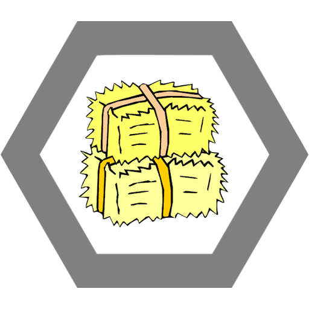

Katzuna 69 je bojovníkem, kterého takřka nelze zničit. Pomocí svých defensivních vlastností a schopností udolá každého protivníka, i když to v některých případech může trvat i hodiny.

Kulturní deník
Kačka se dokáže vyhýbat této jedné povinnosti velmi efektivně, ačkoliv ji zároveň může vždy použít jako důvod, proč nemůže dělat něco jiného. Jedná se o dvojitý únik, který zvládá jen málo bojovníku a Kačka někdy dokáže zmást i samu sebe. Evasion 50%, 10% chance to self confuse
Defense matrix
Kačky breastplate je z určitých důvodů velmi rozlehlý, kryje tedy a velkou část jejího torza a zad. Block +15
Sem tlustá
Kačka vystrčí svůj kolosální špek na panděru a odpálí všechny nepřátele, kteří se momentálně nacházejí v dosahu. Knocback 30 m.
Pevné pozadí
Ne nadarmo je tento atribut považován za etalon pevnosti. Tato část má v případě bitvy lepší využití než štít z poctivého dubiska. Block +25%

Ulti
Silové pole mimopražskosti. Kačka je takovej balík že dokáže své nepřátele bez námahy spoutat do tvaru balíku sena a následně do nich zabodnout vidle. Stun 15 sec, dmg 30. Dá se používat jen v časy, kdy jí jede vlak